Urushya
Urushya is a gamified financial literacy mobile application designed to empower young adults (18–25) with practical money management skills. Through interactive modules, real-world simulations, mentor guidance, and smart budgeting tools, Urushya transforms complex financial concepts like investing, credit, debt management, and saving into engaging, bite-sized experiences.
Built on behavioral science and UX principles, the app bridges the gap between financial awareness and action. It combines gamification, mentor-led learning, and personalized budgeting systems to help users not just learn — but *apply* financial knowledge confidently in daily life, reducing stress, avoiding debt traps, and building long-term wealth.
Problem Statement & Goal
Young adults in India do not have easy access to simple, customized resources and guidance, regarding strategic finance management. It has led to a fear of learning how to begin and apply a approach towards being financially literate. Financial illiteracy has lead to: poor financial decisions, financial stress, early requirement for loans, and debts.
Individuals in this age category yearn for a feeling of; safety, security, and confidence, in order to take complete control of their future. Users often find existing softwares too overwhelming or untrustworthy, causing them to avoid using these tools consistently and effectively. There is an urgency to motivate and develop a strong financial self efficacy (FSE) to minimize these consequences.
Goal: To guide young adults on making informed decisions to facilitate strategic management of finances. Exercise control and build confidence with your finance management, in a matter of days! LEARN. APPLY. SECURE.
Our Vision & Mission
Vision: A generation of financially confident young adults who make informed, stress-free money decisions and secure their future from day one.
Mission: To democratize financial education through an engaging, mentor-driven, gamified platform that turns learning into action and confusion into clarity.
Target Audience
Young adults 18–25 entering financial independence.
27% Know the Basics
Only 27% of Indian adolescents have basic financial knowledge.
53% in Debt by 30
53% of Indian youth take personal loans before age 30.
Banks See the Gap
Banks urged to target young customers with focused financial tools.
Urushya: The missing link between confusion and confidence.
Main Tools
- Figma: Wireframing, user journey mapping, persona creation, and design system development.
- Google Forms & Excel: Survey distribution and quantitative ranking analysis.
- User Research: 8 in-depth interviews + 15-question survey with 18–25-year-olds across India.
Research Methods
We conducted primary research via in-depth interviews and a structured survey to uncover pain points, behaviors, and aspirations. This was complemented by secondary research (to be provided later) on financial literacy trends in India.
Primary Research
Conducted with 8 participants (aged 18–25) through semi-structured interviews and a 15-question survey to validate assumptions and extract behavioral insights.
Interview – Thematic Analysis
8 participants revealed consistent pain points:
- Overwhelm with financial jargon (“Where do you invest? How to start?”)
- Lack of basic money tracking habits
- Fear of investing due to perceived risk and complexity
- Desire for simple, visual tools and mentor guidance
- Frustration with passive saving and no long-term planning
“A skill related to finance I wish I had is honestly just a basic understanding of it.” – Participant 2
“Just going to an SIP calculator… seeing how they grow over 20 years can be eye-opening.” – Participant 1
Survey – Ranking Analysis
15-question survey (18–27 y/o) revealed:
- Confidence & security level is at an average — FSE is not strongly established
- Lack of knowledge is restricting young adults from engaging in good financial behaviour
- Maintenance and application of good financial habits is poor due to lack of simple tools
- Lack of 'one-stop' solution to learning resources aside from long, complex, and boring theoretical material
 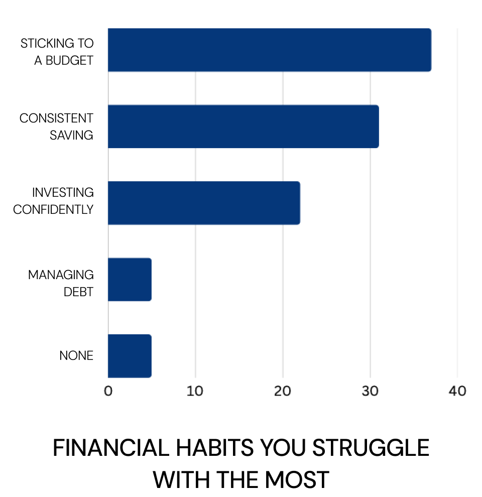
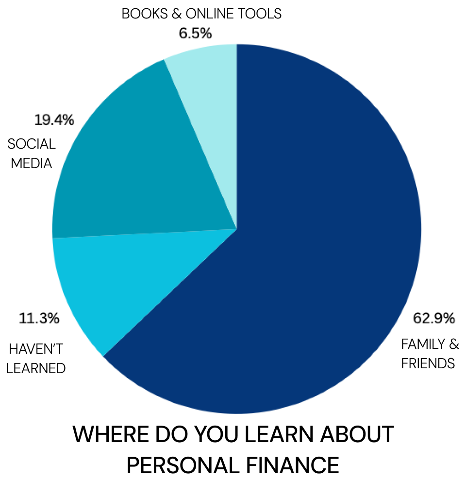
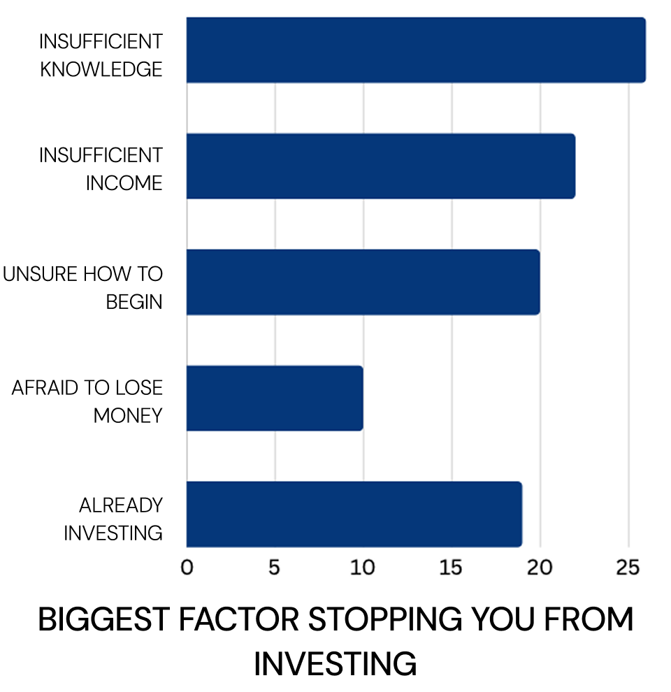
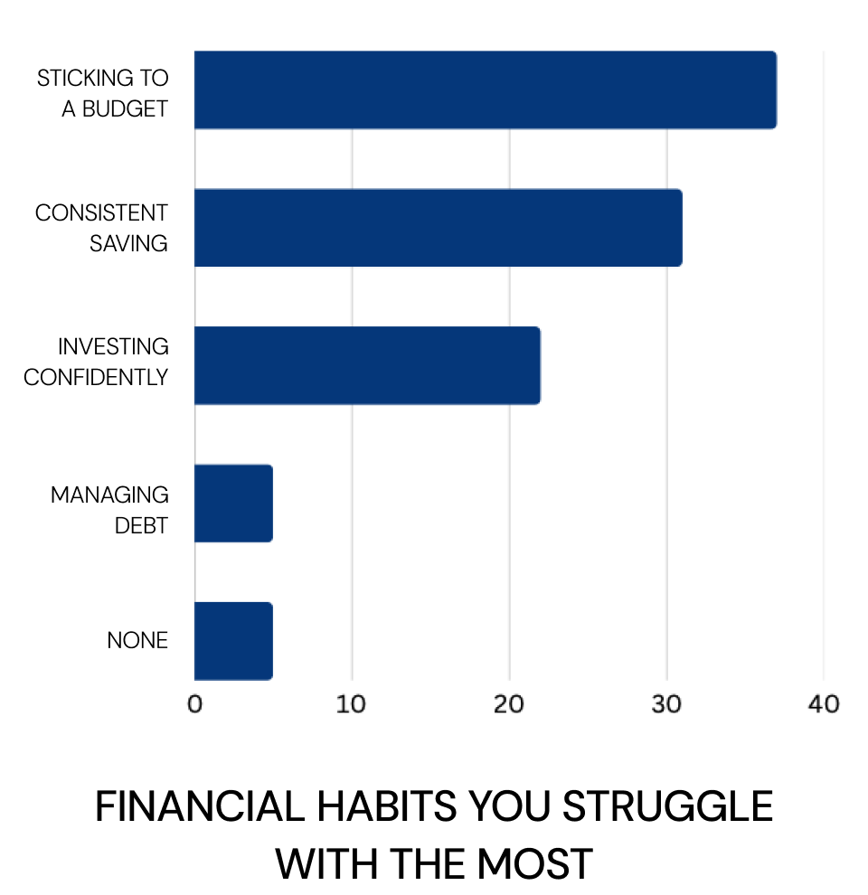
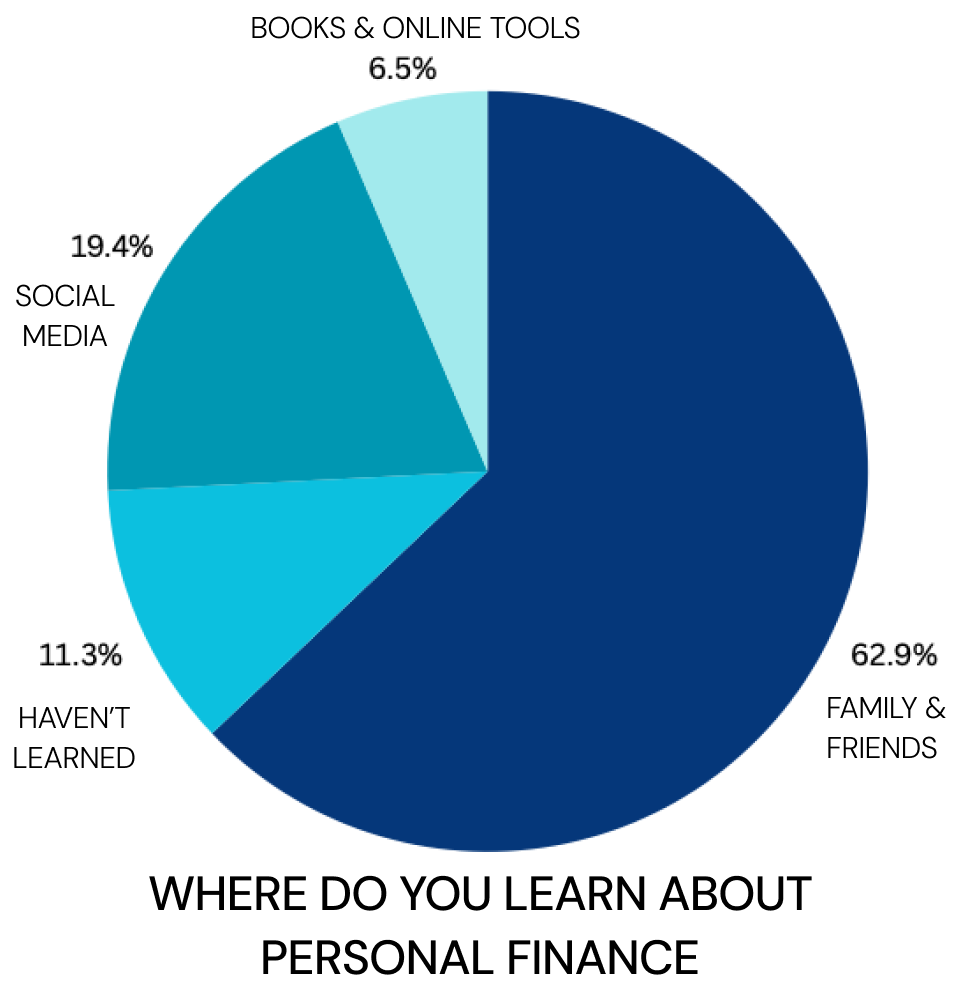
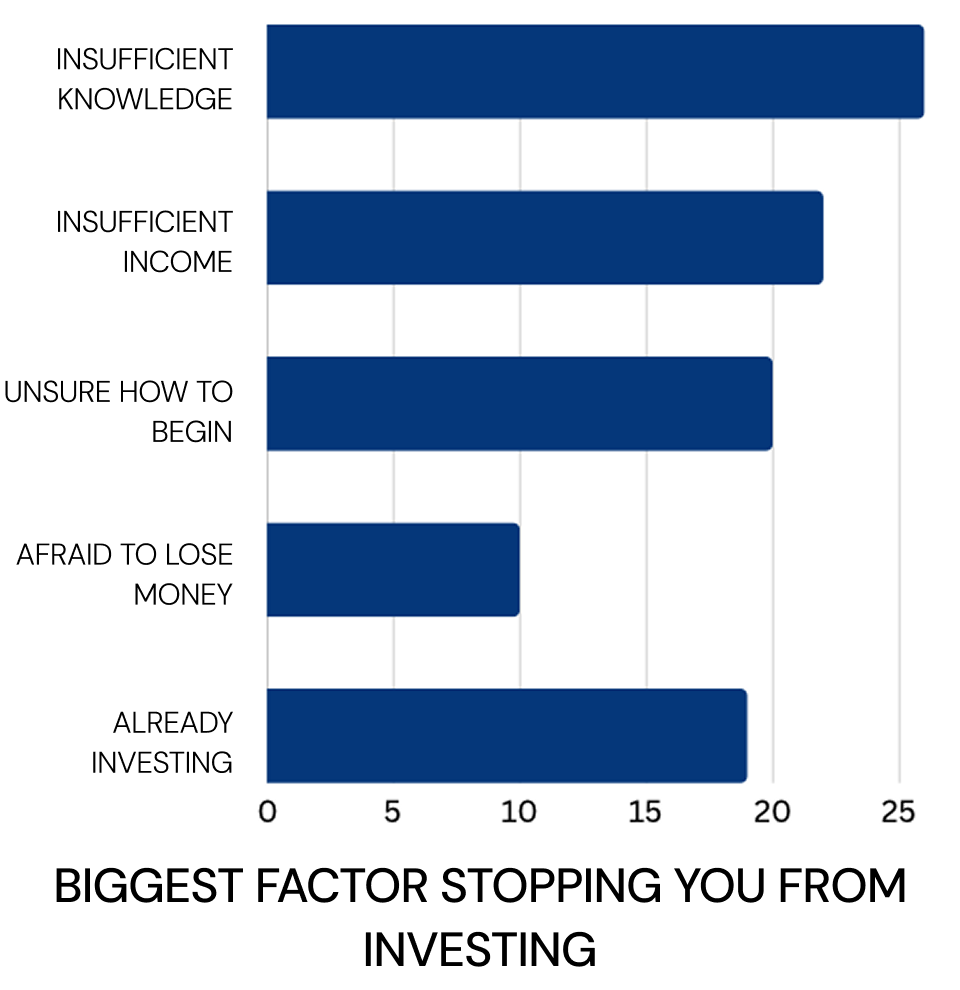
Secondary Research Insights
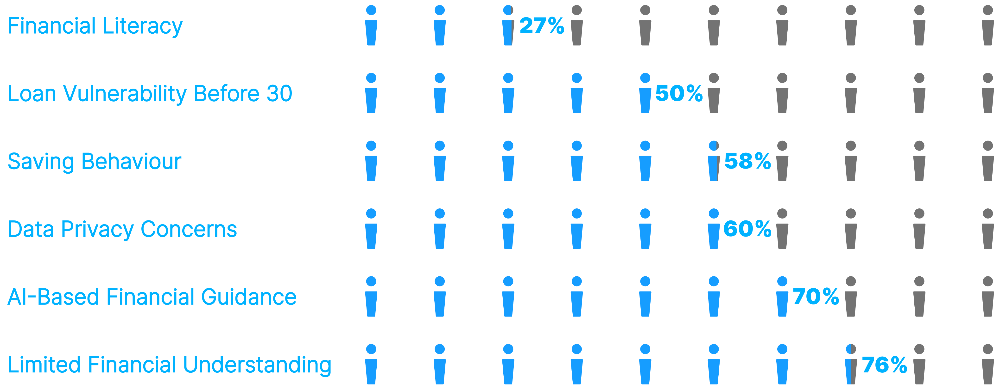Takeaway: India’s youth are curious but paralyzed — they need safe, simple, mentor-backed tools to act.
How Might We?
Reframing user pain into design opportunities:
1. Build Confidence Through Clarity
How might we simplify compounding, credit, and investing so young adults feel confident, not confused?
2. Turn Fear into Practice
How might we let users safely practice investing and budgeting with real-world simulations — no real risk?
3. Make Learning Addictive
How might we use gamification and rewards to turn financial learning into a daily habit users love?
4. Replace Isolation with Guidance
How might we connect users to trusted mentors in real-time to answer doubts and build financial self-efficacy?
5. Break Passive Saving
How might we nudge users from “money just sits” to active, goal-driven saving and investing?
Urushya: A gamified, mentor-backed, simulation-powered app that turns
“I don’t know where to start” into “I’ve got this.”
User Personas
Competitive Analysis
A comparative review of leading financial apps (Groww, Zerodha, Walnut, ET Money) revealed gaps in beginner-friendly learning, mentor support, gamification, and holistic budgeting — opportunities Urushya fills.
Lotus Bloom

Why These Features?
Gamification
+40% engagement
Badges, streaks, challenges
Learning becomes addictive
Mentor Chat
8/8 users wanted help
Live, trusted, real-time
Builds confidence & FSE
Smart Budgeting
58% save passively (RBI)
AI auto-categorize + goals
Turns sitting money → growth
Site Map
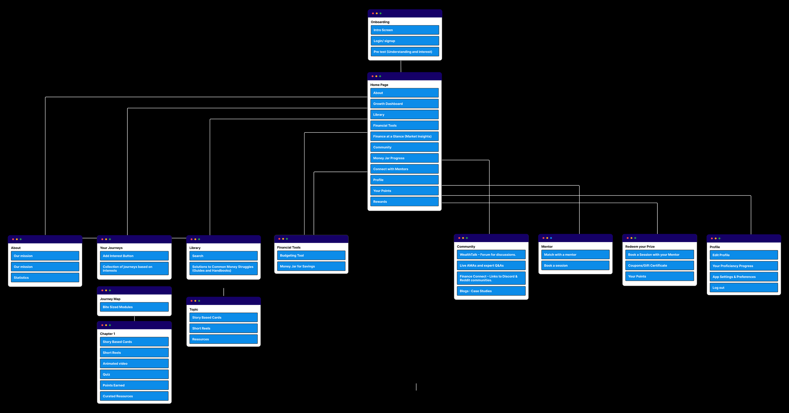Lo-Fi (Paper Prototypes)
Rapid paper sketches were used to ideate core flows: onboarding, budgeting, gamified learning, and mentor chat. These quick sketches helped validate navigation and hierarchy early.
- Initial sketches of key user journeys
- Testing hierarchy and feature placement
- Rapid iteration before digital wireframes
 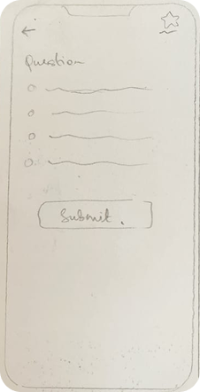
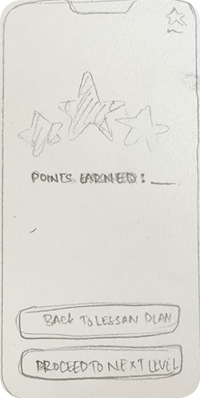
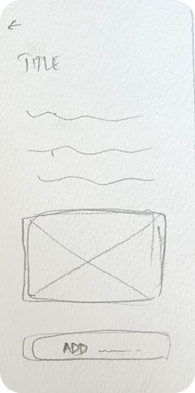
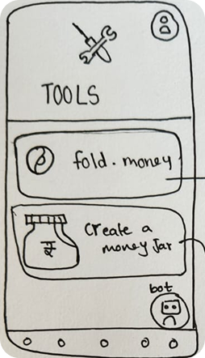
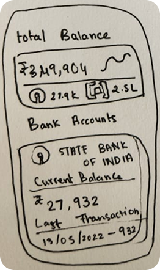
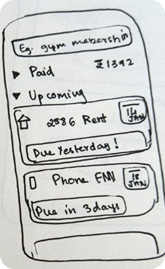
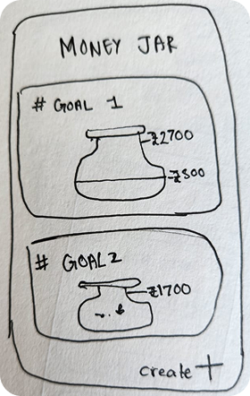
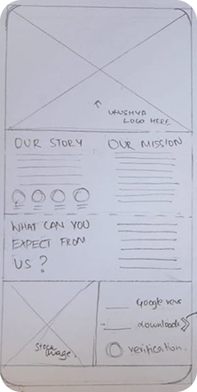
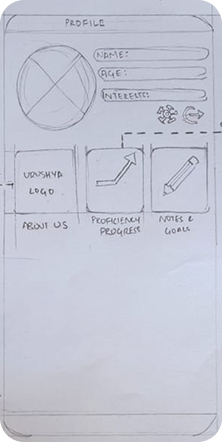
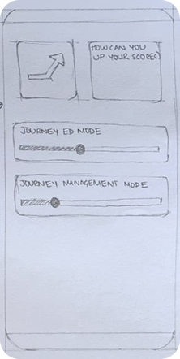
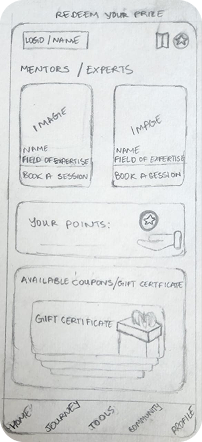
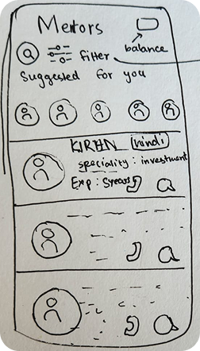
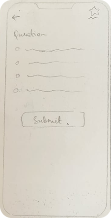
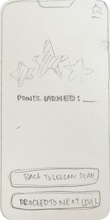
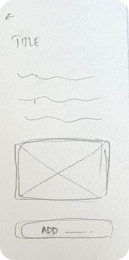
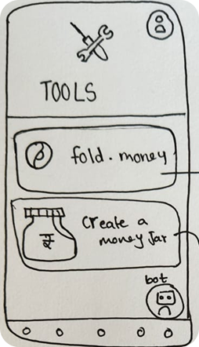
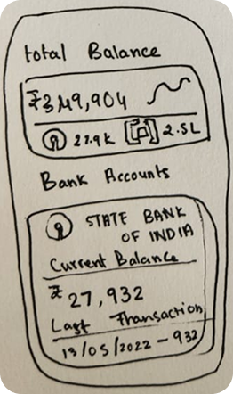
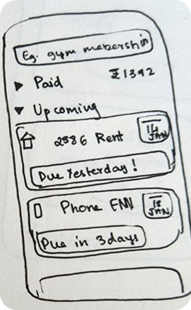
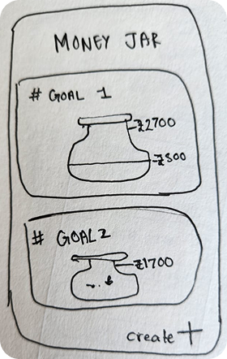
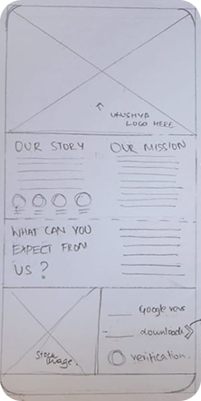
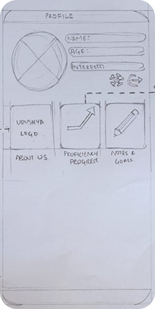
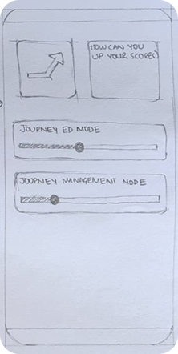
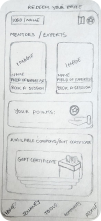
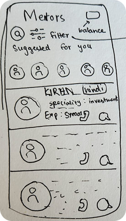
Final Design Screens
The final high-fidelity prototype was built in FlutterFlow with smooth micro-interactions, dark/light mode, and responsive layouts.
Onboarding
- Welcome walkthrough introducing app purpose
- Personalization questions for goal-setting
- Simple progress indicators for onboarding flow
Sign In / Log In
- Secure authentication using email or social login
- Password recovery and verification
- Clean and minimal UI with dark/light mode
Pre-Test
- Baseline financial literacy test
- Instant feedback and scoring summary
- Adaptive difficulty for user levels
Home Page
- Dashboard summary with daily insights
- Navigation to Learn, Apply, and Connect modules
- Personal goal tracker
Learn
- Interactive financial modules (Investing, Budgeting, Credit)
- Gamified quizzes with progress rewards
- Track topic completion and streaks
Apply: Simulation Challenges
- Real-life money management scenarios
- AI-guided decision feedback
- Score-based progress and rewards
Connect With Experts
- 1-on-1 mentorship sessions
- Ask-an-expert live chat
Cash Compass
- Comprehensive financial overview
- Smart spending analytics
- Goal progress visualizations
Profile
- Editable personal details and preferences
- Achievements and learning streaks
- Privacy and notification settings
Final Version – Complete User Flow
From onboarding to mastering finances — the full journey in one seamless flow.
Challenges & Insights from Feedback
- Overwhelm with Financial Jargon: Users felt paralyzed by terms like “SIP,” “compounding,” and “credit score” — validated need for visual, bite-sized learning.
- Lack of Trust in Digital Tools: 3/8 interviewees avoided finance apps due to privacy fears or past bad experiences — reinforced need for transparent, mentor-backed guidance.
- Passive Saving Habits: Survey showed 58% let money “build up” in savings accounts — highlighted urgency for active budgeting and goal-setting nudges.
- Desire for Real-World Practice: “I want to invest but don’t know where to start” (Participant 2) — directly led to the inclusion of **investment simulation** in future scope.
- Gamification Validation: Users responded positively to reward systems in early lo-fi tests — confirmed engagement potential.
- Mentor Demand: 100% of interviewees wanted “someone to ask doubts” — solidified the mentor chat system as a core feature.
“Just going to an SIP calculator and seeing how money grows over 20 years can be eye-opening.” – Participant 1
Future Scope
Urushya is designed for evolution. The next phase includes:
- Investment Simulation Feature: A risk-free environment where users practice trading and portfolio management with virtual ₹1,00,000. Real-time market data, performance analytics, and mentor feedback deepen real-world financial confidence.
- AI-Powered Financial Coach: Personalized nudges, expense predictions, and goal progress forecasts using machine learning.
- Community Challenges: Group savings goals, investment leaderboards, and peer learning circles to foster accountability.
- Multilingual & Regional Expansion: Support for Hindi, Tamil, Telugu, and more to reach Tier 2/3 cities.
- Integration with UPI & Banking APIs: Auto-track expenses, set round-up savings, and visualize real transactions (with user consent).
- School & College Partnerships: White-labeled version for financial literacy programs in educational institutions.
From prototype to pilot — Urushya aims to be the default financial companion for every young Indian entering adulthood.